Microsoft Excel
O Microsoft Excel é uma das mais poderosas ferramentas de manipulação de dados, com qual podemos trabalhar números, valores, datas, moedas, gráficos, operações matemáticas e muito mais.
O Espaço de Trabalho do Excel conta com uma grade de colunas e linhas formando células onde se oculta a página de impressão. As células do Excel vão da A1 (Coluna A, Linha 1), até a célula XFD1048576 (Coluna XFD, Linha 1.048.576), o que dá um total de 2.147.483.648 células (Mais de 2 bilhões de células visíveis).
Nas células do Excel podemos utilizar fórmulas para efetuar cálculos matemáticos e formatações diversas.
Os dados na planilha são postos automaticamente na página de impressão, e quando estes ultrapassam os limites da página são transferidos também automaticamente para a próxima página sem que nada seja alterado na apresentação da planilha.
Visão geral do Excel
Assim como nos outros aplicativos, o Excel possui acima do Espaço de Trabalho a Faixa de Opções com as opções dos nossos menus.
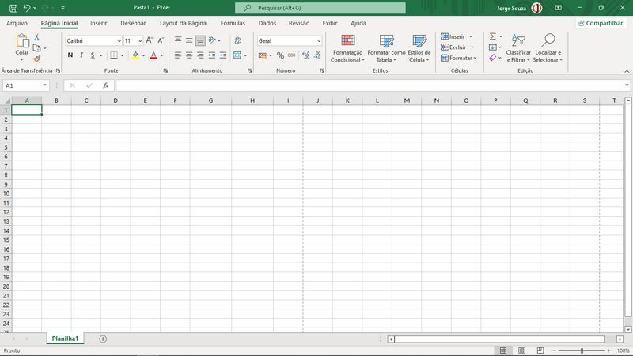
Abaixo do espaço de trabalho temos as guiais onde podemos trabalhar com uma ou mais planilhas simultaneamente, e até mesmo interoperar os dados entre elas.
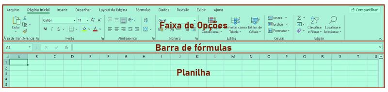Abaixo das guias temos a Barra de Status. A navegação dentro da planilha é feita com o mouse ou por meio das barras de rolagem.
Para aumentar o diminuir o zoom da planilha é possível utilizar a Barra de Zoom no canto inferior direito ou a scroll do mouse com a tecla Control pressionada.
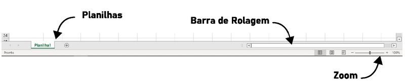Para inserir dados dentro de uma célula basta digitar com a célula selecionada. Para redimensionar as células utilizamos os divisores de linhas e colunas:
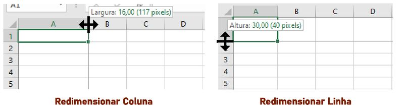Formatação de célula
É possível formatar estilos de caractere e de parágrafo em uma ou mais células de uma planilha da mesma forma como formatamos em outros aplicativos do Office, com apenas algumas características a mais.
No Excel temos opções para mesclar células em linhas, colunas ou em ambas, e definir o alinhamento do conteúdo da célula tanto na horizontal como na vertical. Para tal, no menu Página Inicial, temos a Barra de Fonte e a Barra de Alinhamento, conforme a imagem abaixo.

Na Barra de Alinhamento, os três primeiros ícones definem o alinhamento vertical do texto, ou seu posicionamento na célula, no topo, no meio ou em baixo. Os dois ícones seguintes, ainda na mesma linha servem para definir a direção do texto de forma que se possa digitar na vertical, e até na diagonal, e o ícone seguinte define a quebra de linha, para que o texto ao chegar ao fim da célula pule de linha automaticamente.
Os ícones da linha de baixo na Barra de Alinhamento servem para definir o alinhamento horizontal (à esquerda, centralizado e à direito), aumentar ou diminuir o recuo do texto em relação à margem esquerda da célula, e o último ícone é utilizado para mesclar células, o que é utilizado com frequência principalmente na formatação de tabelas.
Formatação de número
Para efetuar operações aritméticas básicas numa ou mais células do Excel utilizamos o sinal de igual (=) antes da operação. Ou seja, se você quiser somar 5+5, digitará:
=5+5
E, ao pressionar Enter, o Excel retornará o resultado da operação. No entanto, note que a célula não conterá apenas um texto, apesar deste resultado ser formatável, ele ainda é uma operação matemática, o que você pode verificar na Barra de Fórmulas, que mostra o conteúdo da célula:
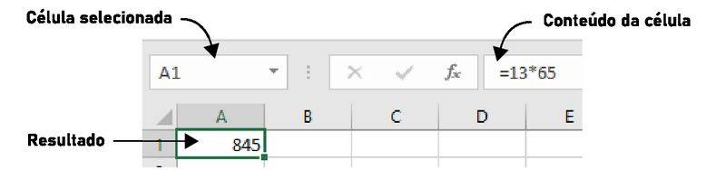Da mesma maneira é possível efetuar operações matemáticas utilizando o conteúdo de outras células, mesmo que elas contenham resultado de outras operações matemáticas, é isso que possibilita o Excel efetuar operações matemáticas das mais complexas.
Para efetuar operações utilizando várias células, utilize o sinal de igual em seguida digite o valor ou clique nas células desejadas.
Ao clicar numa célula ao invés de inserir um valor, o nome da célula é inserido na fórmula no lugar do valor. Você pode digitar fórmulas utilizando os nomes das células que contenham o valor. Se você digitar =81/A1, a fórmula dividirá o valor 81 pelo valor contido em A1 (célula da coluna A, linha 1). Caso o valor na célula de destino não seja numérico, a fórmula gerará um erro.
Ao lado da Barra de Alinhamento temos a Barra de Número, por meio dela podemos formatar o conteúdo da nossa célula de maneira mais apresentável sem que isso afete as operações que estamos executando. Por exemplo se quisermos efetuar um cálculo com valores em real (R$), podemos formatar como moeda, de forma que: R$:10,00 + R$:20,00 retorne um valor R$:30,00, ou seja a formatação mantém a apresentação do conteúdo da forma mais adequada, mas não impede que os cálculos sejam efetuados.
É possível formatar números como diversos tipos de moeda, como porcentagem, data, hora, fração, científico entre vários outros, inclusive formatações personalizadas. É possível ainda configurar separador de milhares e casas decimais.
Formatação de Tabelas
Ao trabalharmos com muitos dados, ou com listas de dados, muitas vezes desejaremos organizá-los em tabelas, para isso o Excel possui recursos especiais para formatação de tabelas, e inclusive para conversão dos dados de uma tabela em um gráfico.
Observe a tabela abaixo, nela temos algumas das formatações que aprendemos até agora, o título está numa célula que foi mesclada das duas colunas, a tabela possui um estilo e os números foram formatados como moeda:
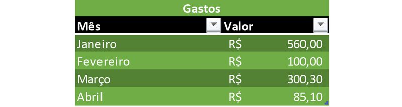No exemplo simples de tabela acima temos um conjunto de dados nome-valor, onde a coluna da esquerda possui os nomes e a da direita os valores. Nesse caso, os nomes referem-se ao mês e os valores são os gastos daquele mês. Foi aplicado a essa tabela um Estilo de Tabela, da Barra de Estilos do Excel. Note que ao aplicarmos o estilo o Excel já reconhece o conjunto de dados como uma tabela, fornecendo para nós, logo ao lado dos títulos um menu suspenso onde podemos classificar ou filtrar nossos dados.
Você pode adicionar filtros às suas tabelas clicando na opção Classificar e Filtrar que se encontra na Barra de Edição no menu Página Inicial. Caso não queira aplicar um estilo de tabela pré-formatado. O filtro classificará ou filtrará toda a sequência de dados na linha abaixo.
Linhas e Colunas
Ao criarmos uma tabela, talvez seja necessário incluir mais uma coluna, ou mais uma linha, ou até mesmo excluir as já existentes, temos duas formas de fazê-lo:
- Clicando com o botão direito sobre o número da linha ou sobre a letra da coluna e selecionando Excluir ou Inserir.
- Ou utilizando os campos Inserir, Excluir e Formatar, logo ao lado da Barra de Estilos.
Numa tabela podemos ainda trabalhar com repetição de valores ou sequência. Ao clicarmos numa célula, ou selecionarmos várias células, podemos notar que a seleção possui um ponto no canto inferior direito, esse ponto é a alça de repetição.
Ao selecionarmos um grupo de células com números aleatórios, ou texto, essa alça permite repetir o conteúdo daquelas células quantas vezes desejarmos apenas clicando sobre a ela e arrastando. Se selecionarmos uma sequência como 1,2,3 ou 7,11,15 a alça serve para inserirmos o restante da sequência até o ponto que desejarmos.
Gráficos
Dados e tabelas de uma planilha podem ser utilizados para gerar gráficos. O Excel conta com diversos tipos de gráficos prontos para utilizarmos, gráficos de barras, de linhas, de pizza entre muitos outros.
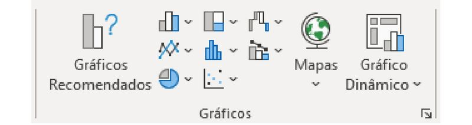A imagem acima mostra a Barra de Gráficos existente no menu Inserir, na qual podemos inserir gráficos utilizando os dados de nossa planilha. Clicando no ícone de seta no canto inferior direito desta barra podemos acessar todas as opções de gráficos existentes no Excel, como mostrado na imagem a seguir.

O gráfico abaixo é um modelo simples de fatias com apenas uma série de dados, recolhidos da coluna Valor de nossa tabela.
Para gerar um gráfico a partir de uma tabela, tenha em mente que uma coluna possuirá os nomes e a outra, os valores. A coluna com os valores será a série de dados utilizados no gráfico. O título do gráfico deve estar na célula acima dos valores.
Tendo isto em mente, siga estes passos:
1. Clique com o botão direito do mouse sobre um dos valores e selecione Classificar, em seguida, Classificar do Maior para o Menor. Isso fará com que a primeira fatia da pizza seja a maior e a última a menor, facilitando a leitura dos dados.
2. Clique sobre um dos valores.
3. Clique no menu Inserir.
4. Na Barra de Gráficos clique no ícone Inserir Gráfico de Pizza.
5. Selecione a primeira opção.
6. Para escolher outro estilo para o seu gráfico clique no menu Design do Gráfico.
7. Agora você pode formatar também a tabela caso queira.
Podemos ainda criar gráficos com mais de uma série de dados, para isto, basta que separemos os valores de cada série em colunas diferentes. Observe o gráfico abaixo e veja que agora para cada nome na coluna Participantes temos três séries de dados, Mês 01, Mês 02 e Mês 03, que são exibidos no gráfico de barras ao lado.
O processo de criação é o mesmo e o Excel reconhece automaticamente tantos as séries de dados quanto os nomes associados a elas. A única diferença é que para o gráfico inserir um título automático, o mesmo deve estar na célula acima da última série de valores. Depois do gráfico criado é possível formatar a tabela livremente.
Veja abaixo o resultado almejado:
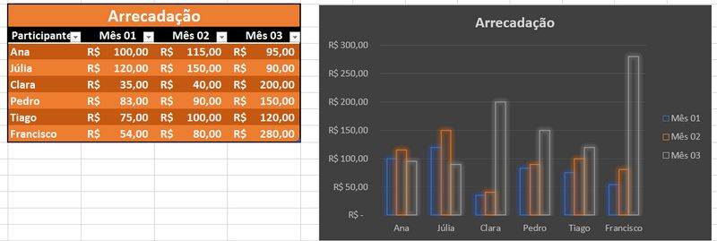Básico sobre Formatação Condicional
A formatação condicional é utilizada para formatar as células caso uma ou mais condições sejam satisfeitas nos dados contidos nelas.
Para aplicar uma formatação condicional basta selecionar as células ou a série de dados desejada e clicar em Formatação Condicional, na Barra de Estilos do menu Página Inicial, e escolher o tipo de formatação desejada.
Por exemplo, se a célula contiver determinada informação ou se um dado contido na célula for maior ou menor que determinado valor, um estilo é aplicado. Para utilizarmos, devemos especificar Regras de Formatação Condicional.
Podemos especificar formatações condicionais com base em:
Regras de Realce: Realça células com uma formatação personalizada cujo conteúdo seja maior ou menor, igual a, ou contenha determinado valor.
Regras de Primeiros/Últimos: Realça as primeiras ou últimas células com base em seus valores, as células que contenham um intervalo de valores inicial ou final, ou as células que estejam acima ou abaixo da média geral da série de dados da tabela, com uma formatação personalizada.
Barras de Dados: Insere barras de dados em escala nas células com base no valor contido nelas e num intervalo de início e de fim para este intervalo.
Escalas de Cor: Realça células com uma gradação personalizada de cores com base nos valores contidos nelas.
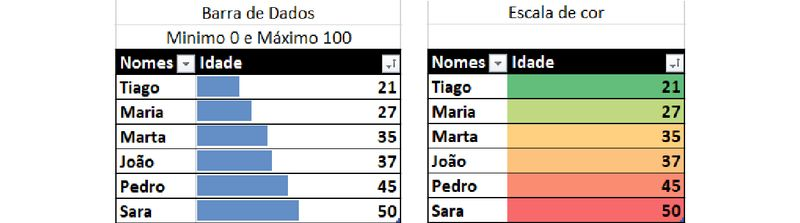Ícones: Insere ícones personalizados para cada intervalo de valor contido nas células.
Regras personalizadas: Podemos ainda aplicar regras personalizadas definindo conteúdos condicionais ou intervalos de acordo com a necessidade, podemos até mesmo criar fórmulas para definir quais células devem receber a formatação especial.

Antes de começarmos a trabalhar com matemática no Excel, vamos fazer um pequeno exercício prático para fixar tudo o que aprendemos até agora.
Para este exercício, observe a tabela e o gráfico abaixo:
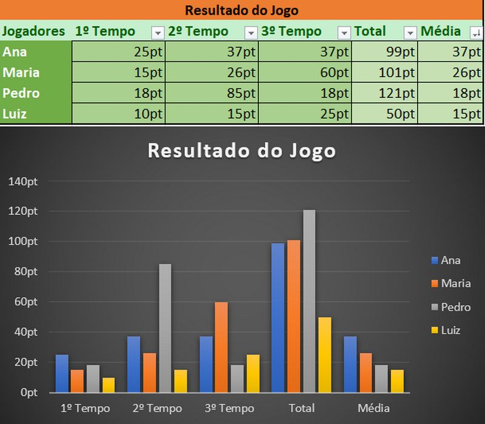Mãos à obra!
Siga as etapas abaixo para criar a tabela conforme mostrado acima:
1. Abra o Excel, crie um novo arquivo e salve em sua pasta.
2. Insira os dados na tabela sem nenhuma formatação.
Detalhe: Não insira pt ao final das pontuações, criaremos um estilo de número especial para pontuação. Também não insira os dados nas colunas Total e Média.
1. Insira o título da tabela na célula acima da célula que contém “Média”.
2. Selecione as células com os títulos das colunas (exceto “Jogadores”) e aplique um filtro (veja na tabela acima quais células possuem filtro).
3. Selecione a célula E3 (primeira célula da série “Total”) e digite: =SOMA(B3:D3). Essa fórmula calculará o total automaticamente.
4. Clique na alça de repetição no canto inferior direito da célula e arraste para baixo até o fim da tabela. Assim você inserirá todos os totais automaticamente.
5. Selecione a célula F3 (primeira célula da série “Média”) e digite: =MED(B3:D3). Essa fórmula calculará a média automaticamente.
6. Clique na alça de repetição no canto inferior direito da célula e arraste para baixo até o fim da tabela para inserir todas as médias.
7. Clique num dos valores da tabela e clique no menu Inserir.
8. Em Gráficos, selecione Gráficos de Barras ou Colunas e clique em Mais Gráficos de Colunas.
9. Selecione: Todos os Gráficos → Colunas → Coluna Agrupada → E escolha a segunda opção.
10. Altere o estilo do gráfico como desejar.
11. Posicione o gráfico melhor na planilha.
12. Mescle as células do título da tabela.
13. Aplique um filtro e formate a tabela.
Se tiver dificuldade com este exercício peça ajuda ao seu instrutor.
Aritmética Básica
Voltemos à escola! Pelo menos teoricamente.
O Excel nos permite fazer operações matemáticas de maneira muito mais fácil que a que aprendemos com lápis e papel, e até mesmo mais fácil que com uma calculadora de mão ou de celular.
Como já vimos anteriormente, tudo o que inserimos numa célula é tratado como conteúdo, que pode ser geral, número, moeda, porcentagem e assim por diante, mas podemos inserir operações matemáticas e fórmulas utilizando o sinal de igual, assim:
=5+5
Ao pressionar Enter o Excel exibirá na célula apenas o resultado, mas o conteúdo do cálculo ainda pode ser verificado na Barra de Fórmulas. Podemos ainda efetuar cálculos com valores de outras células fazendo referência ao nome dessas células na fórmula, assim:
=3+B4
O cálculo acima somará 3 ao valor contido na célula B4 e retornará este resultado na célula onde o cálculo foi feito.
É possível alterar o cálculo na Barra de Fórmulas ou diretamente na célula com um duplo-clique.
Podemos ainda referenciar várias células numa fórmula utilizando separadores de ponto e vírgula ou de dois pontos. O ponto e vírgula referencia células independentes e os dois pontos referenciam sequências de células, assim:
=SOMA(A1:A5)
O cálculo acima somará todos os valores desde a célula A1 até a célula A5.
=SOMA(A1;A2;A5)
O cálculo acima somará os valores das células A1, A2 e A5.
No exemplo abaixo, a fórmula de soma foi utilizada para somar uma sequência de células utilizando dois pontos:
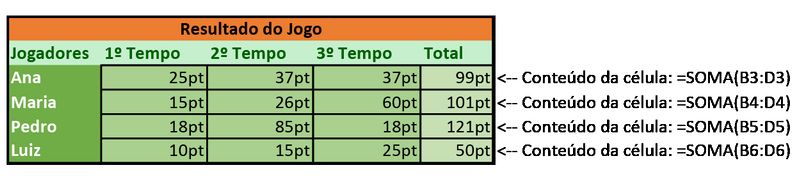Potência
No Excel números sobrescritos não são calculados como potenciação, podemos calcular potências utilizando o acento circunflexo, assim:
=5^2
O resultado do cálculo acima é o quadrado de 5, ou seja 25 (5x5=25).
=5^5
O resultado do cálculo acima é 5 elevado à potência de 5, ou seja 3.125 (5x5x5x5x5=3125).
Raiz quadrada
Assim como em cálculos matemáticos comuns, para obter uma raiz quadrada elevamos um número à potência de ½, e uma raiz cúbica elevando à potência de ⅓, podemos fazer estes cálculos numa planilha assim:
=81^(1/2)
O resultado do cálculo acima é a raiz quadrada de 81, ou seja, 9 (9x9=81).
=27^(1/3)
O resultado do cálculo acima é a raiz cúbica de 27, ou seja, 3 (3x3x3=27).
Estes são cálculos manuais, mas podemos utilizar fórmulas para calcular potências e raízes. É possível ainda referenciar células ao invés de utilizar valores.
Parêntesis
Para dar prioridade máxima a certa equação, basta a colocarmos entre parênteses, de forma que tudo que estiver entre parênteses será executado antes que qualquer outra operação, assim:
=(A1+A2+A3)*(B1+B2+B3)
Neste exemplo, as somas das células serão calculadas antes que a multiplicação, caso não utilizássemos os parênteses o primeiro cálculo a ser feito seria A3*A4, e o resultado seria somado aos outros valores.
Precedência de operadores
Como aprendemos na escola, os cálculos devem respeitar a precedência de operadores, de forma que os cálculos entre parênteses devem ser feitos primeiro, depois as potências e raízes, em seguida multiplicação e divisão e por fim, soma e subtração. Para facilitar, observe a lista abaixo:
1º. Parêntesis.
2º. Potência e raiz (o que vier primeiro).
3º. Multiplicação e divisão (o que vier primeiro).
4º. Soma e subtração (o que vier primeiro).
Observe a operação abaixo e tente calcular o resultado de cabeça, para verificar se você consegue observar a precedência dos operadores:
=(5+(4*3)*(3+2)/2)
Vejamos em que ordem o cálculo será feito.
1. ((4*3 = 12) e (3+2 = 5)) Primeiro os parêntesis.
2. (12*5 = 60) Depois a multiplicação.
3. (60/2 = 30) Depois a divisão.
4. (5+30 = 35) Por fim a soma.
Efetue este cálculo numa célula do Excel e veja se obtém o mesmo resultado.
Operações entre planilhas
Podemos não apenas referenciar células da mesma planilha, mas referenciar células de outras planilhas dentro da mesma pasta de trabalho (arquivo do Excel). Para referenciarmos células em outras planilhas basta inserirmos: “o nome da planilha”, “uma exclamação” e “o nome da célula na planilha de destino”, assim:
=(Planilha2!B4+Planilha1!C3)
A fórmula acima soma o valor da célula B4 da Planilha2 ao valor da célula C3 da Planilha1, e retorna esse valor na célula da planilha atual em que a fórmula foi feita.
Nessa fórmula, Planilha2 e Planilha1 são os nomes dados às planilhas, as planilhas terão o nome que o usuário definir ao criá-las ou ao renomeá-las, por exemplo Saldo, ou Contas, ou Mês etc.
Um detalhe importante é que você não precisa digitar todos os nomes de células e planilhas para referenciá-las, enquanto digita a fórmula, basta clicar na célula de destino para inserir seu nome na fórmula.
Fórmulas
Já passamos brevemente pelas fórmulas SOMA e MÉDIA, mas o Excel possui uma gama variada de fórmulas para diversas finalidades, que podem manipular cálculos numéricos e financeiros, datas, textos e condições lógicas. Vejamos a principais.
Soma e Multiplicação
As fórmulas SOMA( ) e MULT( ) servem respectivamente para somar e multiplicar valores e são escritas nesta regra:
=SOMA(num1;num2;num3...)
=MULT(num1;num2;num3...)
Onde num1, num2 e num3... são os valores numéricos (ou células referenciadas) a serem somados. Podemos passar como argumentos vários valores ou células e até intervalos, dessa maneira:
=MULT(A1:A6)
O cálculo acima multiplicará todos os valores no intervalo de valores de A1 até A6.
=SOMA(A1:A6)
O cálculo acima somará todos os valores no intervalo de valores de A1 até A6.
Média, Mínimo e Máximo
=MED(num1;num2...)
A regra acima demonstra a fórmula de média, que recebe vários argumentos, soma-os e em seguida os divide pela quantidade de argumentos recebidos, obtendo a média total. Exemplo:
codigo =MED(5;6;7;8;9)
O cálculo acima retorna 7, ou seja: (5+6+7+8+9 = 35)/5 = 7.
Utilizando uma fórmula de mínimo e máximo podemos obter o maior e o menor valor de um intervalo de valores específicos. Pode não fazer sentido usá-las se o intervalo for preenchido manualmente, mas quando temos um conjunto de dados em que os valores são gerados por fórmulas e podem ser alterados automaticamente, é útil fazer uso das fórmulas de mínimo e máximo. Elas seguem essa regra:
=MÍNIMO(num1;num2...)
=MÁXIMO(num1;num2...)
Os argumentos são o conjunto de células ou de valores. Segue exemplos:
=MÍNIMO(A5;A6;A7;A8;A9;A10)
= MÁXIMO (A5:A10)
As fórmulas retornam o maior ou o menor valor contidos nas células A5 a A10, e podem ser escritas de qualquer uma das duas maneiras exibidas.
Potência e raiz
É possível calcular potência e raiz também por meio de fórmulas, como foi dito, as fórmulas seguem a regra a seguir:
=POTÊNCIA(num;potência)
=RAIZ(num)
A fórmula de potência recebe como primeiro argumento um número ou referência de célula e como segundo a potência, que pode ser também uma referência. Assim:
=POTÊNCIA(A1;3)
A fórmula acima eleva o valor na célula A1 ao cubo (à potência de 3).
A fórmula de raiz recebe apenas um argumento, o valor ou referência de valor do qual será extraída a raiz quadrada. Assim:
=RAIZ(9)
A fórmula acima retornará 3, que é a raiz quadrada de 9. O Excel não possui função para extrair raiz cúbica, o que pode ser feito manualmente como mostrado no subtítulo sobre Potência.
Módulo
Como aprendemos na escola o módulo é o resto da divisão inteira, por exemplo para dividirmos 9 por 4 e obter um valor inteiro, obteremos 2 e restará 1 (9 / 4 = (2 * 4) + 1). A fórmula do módulo funciona assim:
=MOD(num;divisor)
Veja o exemplo a seguir:
=MOD(27;5)
A fórmula acima retornará 2 que é o resto da divisão inteira de 27 por 5, ou seja, (27 / 5 = (5 * 5) + 2).
Fórmulas de Data e Hora
Um recurso interessante que veremos brevemente são as fórmulas de data e hora, veja algumas:
HOJE()
Retorna a data atual com horário 0:00:00. Não recebe argumentos.
AGORA()
Retorna a data e hora atuais (inclusive com os segundos). Não recebe argumentos.
DATA(ano;mês;dia)
Insere uma data formatada recebendo como argumentos (nesta ordem): ano, mês e dia.
Você pode calcular intervalos de dias utilizando datas! Por exemplo numa primeira célula insira a fórmula HOJE() e numa segunda célula insira uma data específica. Em seguida, numa terceira célula, insira um cálculo que subtraia a segunda da primeira célula e obterá o intervalo em dias.
Fórmulas Lógicas
Fórmulas Lógicas testam condições e retornam valores. Elas são muito úteis em diversas situações, aprenderemos como utilizá-las trabalhando com a fórmula SE, que é a mais comum, mas existem várias outras.
A construção da fórmula SE funciona da seguinte maneira:
=SE(teste_lógico;condição_se_verdadeira;condição_se_falsa)
Vejamos cada um dos argumentos que ela recebe:
1. Teste Lógico: é o teste que definirá se uma condição foi satisfeita, por exemplo, se um valor é maior, menor ou igual a outro valor.
2. Condição verdadeira: Valor que será retornado pela célula caso a condição do teste lógico for satisfeita.
3. Condição falsa: Valor que será retornado caso a condição do teste lógico não for satisfeita.
Vejamos alguns exemplos:
=SE(5>4;1;2)
Apenas para fim ilustrativo, claro. A fórmula acima testa se 5 é maior que quatro e retorna 1 se for, e 2 se não for. O valor retornado na célula será 1.
=SE(5=4;“É igual”;“É diferente”)
A fórmula testa se 5 é igual a 4, se for retorna o texto “É igual”, se não, retorna “É diferente”. A célula conterá o resultado “É diferente”.
Note as aspas quando precisamos inserir texto numa fórmula.
=SE(A1>=A2;“Acima da meta”;“Abaixo da meta”)
A fórmula testa se o valor na célula A1 é maior ou igual ao valor na célula A2 e retorna “Acima da meta” se for verdadeira, ou “Abaixo da meta” se for falso.
Existem várias opções de testes lógicos que podem ser construídos. Podemos utilizar os seguintes operadores:
> Maior que.
< Menor que.
>= Maior ou igual a.
<= Menor ou igual a.
= Igual a.
Podemos ainda testar o conteúdo existente numa célula, por exemplo: SE(A1=“sim”;1;2). Se o valor em A1 for “sim”, retorna 1, senão, retorna 2.
Neste exercício desenvolveremos uma planilha de controle de gastos completa para treinarmos tudo o que aprendemos até agora. Neste exercício trabalharemos com fórmulas, gráficos, tabelas, formatação condicional e layout.
O resultado deverá ser o seguinte:
Planilha Entradas
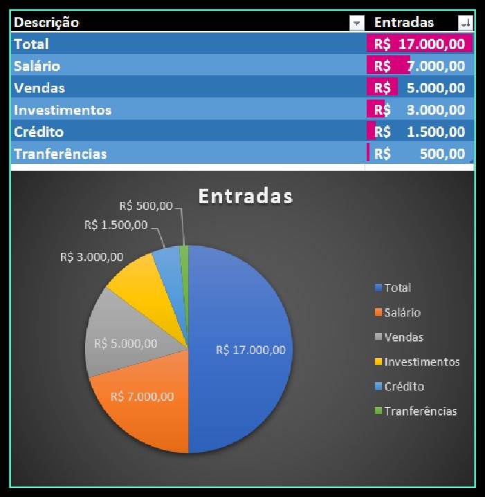Planilha Saídas
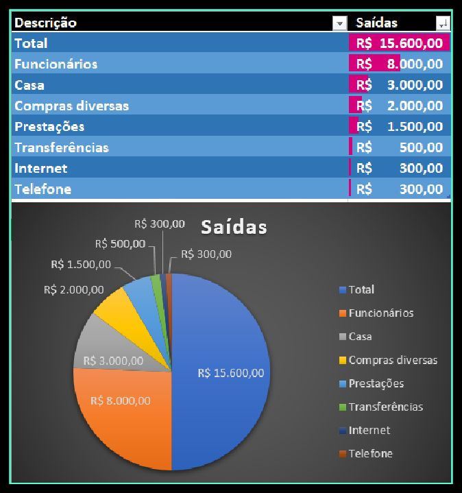Planilha Conta
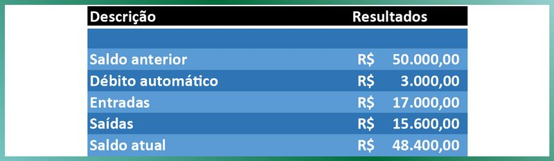Planilha Relatório
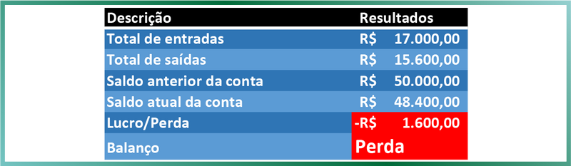1. Para começar então, abra o Excel, crie uma nova pasta de trabalho (arquivo Excel) e salve em sua pasta com o nome Controle de Gastos.
2. Nas guias abaixo do espaço de trabalho, crie mais três planilhas e nomeie tudo como: Entradas, Saídas, Conta e Relatório.
Preste bastante atenção: Para facilitar seu trabalho, a célula com o nome “Descrição” deve ser a A1, dessa maneira, as fórmulas que lhe passarei funcionarão perfeitamente ao copiá-las.
3. Preencha cada uma das planilhas com os dados a seguir:
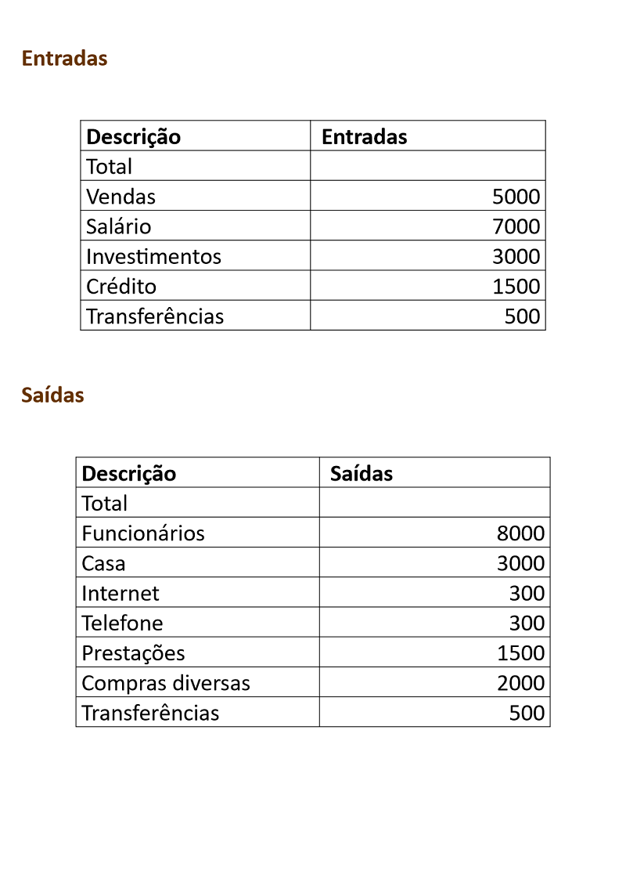 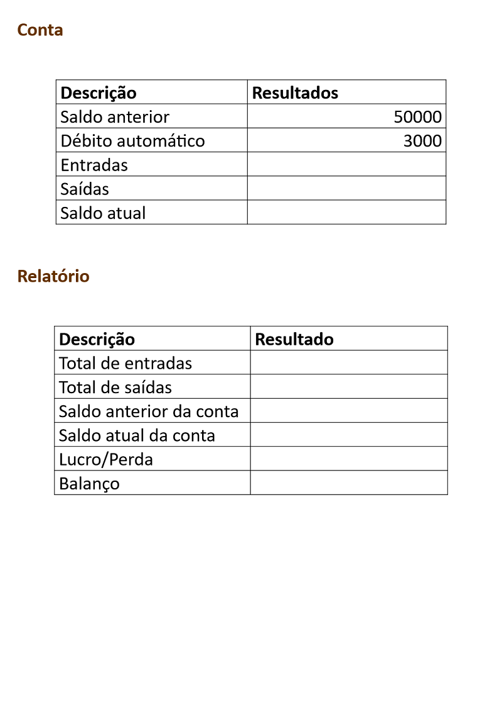Calculando os totais
1. Antes de tudo, formate as colunas com os valores no formato de Moeda, para selecionar uma coluna inteira basta clicar sobre sua letra.
2. Devemos calcular os totais de entrada e de saída, ou seja, de lucro e de gasto. Para isso, as células B2 da planilha Entradas e da planilha Saídas receberão a fórmula: =SOMA(B3:B100). Codigo% Que somarão todos os valores de B3 até a linha 100, dessa forma você pode adicionar novas entradas ou saídas abaixo das que já existem que serão automaticamente adicionadas ao total.
3. Agora vamos adicionar esses valores também nas planilhas Conta e Relatório.
4. Na planilha Conta, no valor de Entrada digite a fórmula: =Entradas!B2 isso referenciará à célula B2 da planilha Entradas que contém o total de entradas.
5. E no valor de Saída digite: =Saídas!B2 isso referenciará à célula B2 da planilha Saídas que contém o total de saídas.
6. Repitas essas fórmulas em Total de Entradas e Total de Saídas da planilha Relatório.
7. Salve sua pasta de trabalho.
Você pode salvar rapidamente seu arquivo Excel com o atalho Alt+1.
Calculando o saldo em conta
1. Para finalizar a planilha Conta, no valor de “Saldo atual”, digite: =(B2+B4)-(B3+B5) ou seja: (a soma do saldo anterior e das entradas), menos (a soma dos débitos automáticos e das saídas).
2. Agora, na planilha Relatório, em “Saldo anterior da conta” digite: =Conta!B2 e em Saldo atual da conta”, digite: =Conta!B6, isso referenciará as células da planilha Conta com o valor anterior que era de R$:50.000 que foi inserido manualmente e com o valor atual que tínhamos acabado de calcular na etapa anterior.
Calculando lucro e perda
1. O valor de Lucro/Perda é muito simples, basta subtrair o valor anterior do atual, assim: =B5-B4. Codigo%
2. Veja que o balanço exibe a palavra Perda, ela é inserida automaticamente caso o saldo atual na conta seja inferior ao saldo anterior, se for superior esta célula deve exibir a palavra Lucro. Para isso utilizamos esta fórmula:
=SE(B5>B4;"Lucro";"Perda")
Ou seja, SE “Saldo atual” maior que “Saldo anterior” retorne “Lucro” senão, retorne “Perda”.
Note que as palavras “Lucro” e “Perda” devem estar entre aspas pois são valores de texto.
Filtros e formatação
1. Para criarmos os gráficos das planilhas Entradas e Saídas devemos primeiro classificá-las, clique na célula Entradas da planilha de mesmo nome e adicione um filtro, em seguida, classifique “do Maior para o Menor”. Faça o mesmo com a planilha Saídas.
2. Formate a tabela com o estilo que desejar. Procure não usar uma cor de preenchimento verde ou vermelha, pois usaremos essas cores na formatação condicional.
Gráficos
1. Para inserir os gráficos nas planilhas de Entradas e Saídas, clique numa das células com os valores e clique no menu inserir.
2. Selecione “Inserir gráfico de pizza” e clique na primeira opção.
3. Selecione o estilo que desejar para o gráfico.
4. Clique no menu Design do Gráfico, selecione Adicionar Elemento, em seguida Rótulos de Dados e escolha Melhor Ajuste.
5. Posicione o gráfico melhor na tabela.
6. Salve sua pasta de trabalho.
Formatação condicional dos valores de lucro e perda
Agora, vamos aplicar uma formatação condicional na planilha Relatório para que os valores de Lucro/Perda e Balanço sejam formatados com fundo vermelho caso haja perda e com fundo verde caso haja lucro. Serão duas regras distintas para cada um.
1. Clique no valor de Lucro/Perda.
2. No menu Página Inicial, clique em Formatação Condicional e em Nova Regra.
3. Na janela que se abriu, clique em “Formatar apenas células que contenham”.
4. Em “Formatar apenas células com”, defina como: “Valor da célula” “é maior do que” “0”.
5. Clique em Formatar.
6. Em Fonte defina a cor como preta, em Preenchimento defina a cor como verde. Clique em Ok, clique em Ok novamente.
7. Nada aconteceu ainda pois o valor em nossa célula está negativo e definimos a regra para quando o valor for positivo, vamos agora definir a regra para quando o valor for negativo.
8. Clique em Formatação Condicional e em Nova Regra.
9. Na janela que se abriu, clique em “Formatar apenas células que contenham”.
10. Em “Formatar apenas células com”, defina como: “Valor da célula” “é menor do que” “0”.
11. Clique em Formatar.
12. Em Fonte defina a cor como branco, em Preenchimento defina a cor como vermelho. Clique em Ok, clique em Ok novamente.
13. Agora a célula deve estar com texto branco em fundo vermelho, isso pois o balanço das finanças está negativo.
14. Salve sua pasta de trabalho.
Formatação condicional do Balanço
Agora, vamos aplicar também a formatação condicional do Balanço.
1. Clique no valor, que agora está como Perda,
2. Clique em Formatação Condicional e em Nova Regra.
3. Na janela que se abriu, clique em “Formatar apenas células que contenham”.
4. Em “Formatar apenas células com”, defina como: “Texto específico” “contém” “Perda”.
5. Clique em Formatar.
6. Em Fonte defina a cor como branco, em Preenchimento defina a cor como vermelho. Clique em Ok, clique em Ok novamente.
7. Clique em Formatação Condicional e em Nova Regra.
8. Na janela que se abriu, clique em “Formatar apenas células que contenham”.
9. Em “Formatar apenas células com”, defina como: “Texto específico” “contém” “Lucro”.
10. Clique em Formatar.
11. Em Fonte defina a cor como preta, em Preenchimento defina a cor como verde. Clique em Ok, clique em Ok novamente.
12. Altere o tamanho da fonte da célula para 14 e defina como negrito.
Cuide para digitar o texto na regra exatamente como ele aparece na fórmula da célula.
13. Salve sua pasta de trabalho.
Alterando valores da tabela para verificar a formatação condicional e a fórmula lógica.
Temos regras lógicas e de formatação para um balanço positivo e negativo, mas como sabemos a diferença? Apenas alterando os valores e toda a tabela será atualizada!
Você deve ter notado que as entradas foram R$:17.000, superiores às saídas que foram R$:15.600, então, como houve um balanço negativo? Isso porque havia contas em débito automático que só foram contabilizadas na planilha Conta. Como solucionamos isso? Pegando um crédito!
Para tal, na planilha Entradas, aumente o valor de Crédito, alterando de R$: 1500 para R$: 5.000.
Retorne para Relatório e veja que agora o Balanço marca Lucro e as células foram formatadas com fundo verde.
Salve sua pasta de trabalho.
Layout
Feito então todo nosso trabalho, agora vamos configurar o layout de impressão.
1. Clique em Layout da Página.
2. Clique em Margens → Margens Personalizadas.
3. Defina as margens Superior e Inferior como 2,5 e Esquerda e Direita como 2.
4. Em Centralizar a Página marque Vertical e Horizontal.
5. Em Página selecione Tamanho do Papel: A5.
6. Clique em Ok.
7. Salve seu trabalho.
Exportação
Agora vamos exportar o arquivo como PDF para sua pasta.
1. Clique em Arquivo → Exportar.
2. Clique em Criar PDF/XPS.
3. Salve o arquivo como .pdf em sua pasta.
4. Abra o arquivo para visualizá-lo.
5. Está finalizado nosso exercício!
Se tiver dificuldades com este exercício peça o auxílio do seu instrutor.